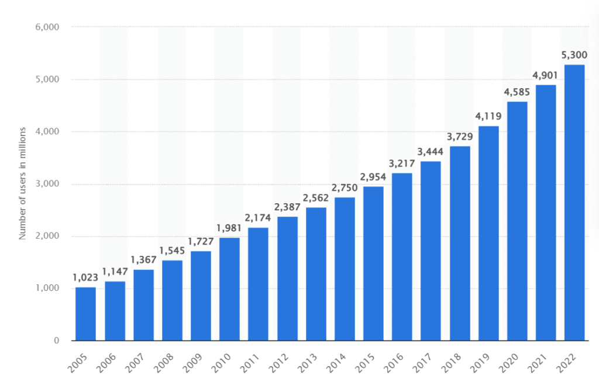

Урок 3
Рекомендации по презентации "3 изобретения":
- визуализировать изобретения на временной шкале, чтобы показать когда они произошли
- показать важность каждого изобретения
- визуализировать их влияние на жизнь человека
- например, показать рост количества пользователей компьютеров, интернет, и мобильной связи с 1980 по
настоящее время
- примеры и исходные данные можно найти в интернет, например здесь и здесь

Источник
Работа с изображениями:
- Вкладка Формат для форматирования изображений
- упорядочивание изображений и объектов на слайде
Оформление текста:
- добавление полупрозрачного фона чтобы улучшить видимость текста и заголовков на фоне рисунков
Дополнительная информация - полезные программы
Популярные редакторы графики (сейчас недоступные в России):
-
Figma
- Определение: Figma — это облачный инструмент для проектирования и прототипирования, который
используется в основном для разработки пользовательских интерфейсов (UI) и пользовательского опыта (UX). Он
позволяет командам работать над проектами в реальном времени, такими как дизайн сайтов, интерфейсы мобильных
приложений и прототипы.
- Основные функции: Совместное редактирование, векторное проектирование, системы компонентов
и поддержка плагинов.
- Применение: Профессионалы используют Figma для разработки приложений, веб-сайтов и сложных
интерфейсных систем.
-
Canva
- Веб-платформа для графического дизайна, предназначенная для создания разнообразного визуального контента,
такого как публикации в социальных сетях, презентации, постеры и многое другое. Она проста в использовании и
подходит как для новичков, так и для непрофессиональных дизайнеров.
- Основные функции: Интерфейс drag-and-drop, шаблоны, стоковые изображения и инструменты для
простой кастомизации.
- Применение: Canva популярна среди малого бизнеса, маркетологов и людей, которым нужны
быстрые и привлекательные визуальные дизайны для брендинга и продвижения.
Видео редакторы:
-
CapCut
- Бесплатное приложение для редактирования видео, доступное для мобильных устройств и компьютеров. Оно широко
используется для создания коротких, привлекательных видеороликов, особенно популярно среди пользователей
TikTok и социальных сетей благодаря своей простоте и мощным функциям.
- Основные функции: Обрезка видео, переходы, фильтры, текстовые наложения, библиотека музыки
и продвинутые эффекты, такие как замедление и обратное воспроизведение.
- Применение: Идеально для создания короткого контента, видеороликов для социальных сетей и
быстрых редактирований с профессиональными эффектами.
-
Clipchamp
- Онлайн-редактор видео с удобным интерфейсом, предназначенный для создания и редактирования видео прямо в
браузере. Принадлежит компании Microsoft и хорошо интегрируется с её продуктами Microsoft.
- Основные функции: Редактор drag-and-drop, шаблоны, стоковые материалы, инструменты для
работы с текстом и звуком, экспорт в высоком разрешении.
- Применение: Подходит для создания бизнес-презентаций, маркетинговых видео и контента для
социальных сетей с минимальными усилиями.